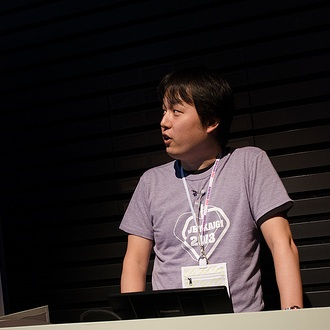
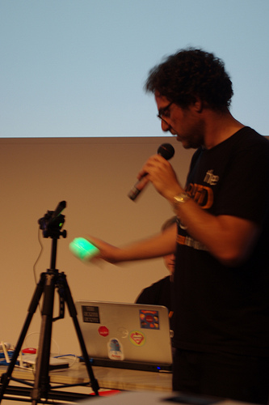
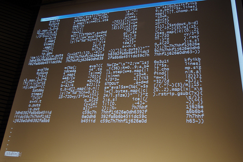
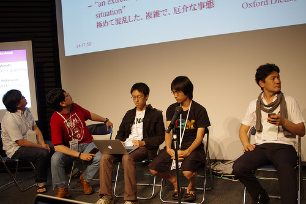
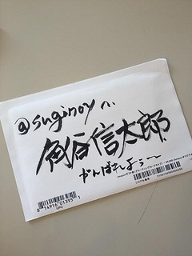

RubyKaigi 2013 レポート
書いた人 : RubyKaigi 2013 るびまレポートスタッフ
RubyKaigi 2013 レポート
開催概要
- 開催日
- 2013 年 5 月 30 日 (木) 10:00 〜 2013 年 6 月 1 日 (土) 18:30
- 開催場所
- 東京国際交流館 プラザ平成
- 主催
- RubyKaigi 2013 実行委員会
- 公式ページ
- http://rubykaigi.org/2013
- 公式ハッシュタグ
- #rubykaigi
- 動画と資料
- http://rubykaigi.org/2013/schedule
はじめに
RubyKaigi が 2011 年 7 月に終わってから、2 年弱の充電期間を経て、新たな RubyKaigi として帰ってきました。 これまでの RubyKaigi とは異なる RubyKaigi 2013。準国際カンファレンスとして蘇り、新たな試みが多かった RubyKaigi 2013。
keynote の大部分のレポートは、gihyo.jp さんの RubyKaigi 2013 レポート にお任せして、るびまでは独断と偏見で選んだ RubyKaigi 2013 の様子を一部ではありますが、お伝えしたいと思います。
May 30
The History of Ruby; 20th Anniversary Ed. by 高橋 征義 さん (書いた人： @shokolateday )
: 
日本 Ruby の会 会長 高橋征義氏が、Ruby の 20 年を語りました。ネットに情報がない時代に日本で生まれた Ruby が、世界各国でカンファレンス (RubyConf) が開催される程に知名度を広げるまでの歩みを振り返った後、高橋氏は「Ruby の歴史の “教科書” に載っている人が来ている。隣に座っているかもしれない。だが、あなたも歴史の一人である。皆で歴史をつくっていこう！」とコミュニティと愛を大切にする Ruby のカンファレンスらしいメッセージで締めくくりました。
今回の RubyKaigi 2013 は高額なチケット料にも関わらずキャンセル待ち、平日である初日には予想を上回る参加者が動員した為、配布弁当の数が不足、立ち見のセッションが複数出る等、参加者の RubyKaigi に対する強い意気込みが表れていました。
Ruby リファレンスマニュアル刷新計画 2013 初夏 by okkez さん (書いた人： @raa0121)
: 
Ruby リファレンスマニュアル (以下、るりま) は 2006 年 8 月にプロジェクトが始まり、doc.okkez.net / doc.ruby-lang.org で公開されています。 2011 年 9 月に主要なクラス・モジュール・メソッドなどに最低限の説明が付きましたが、執筆対象 17000 の内、優先順位の低い Tk や XML 関係の 10000 ほどのエントリーがまだ手付かずの状態なのだそうです。
okkez さんは前回の RubyKaigi 2011 の時にもるりまに関する発表を行われていますが、当時設定した目標をるりまプロジェクトは着実に進め、るりまの UTF-8 化やるりまを利用するツールである BitClust の gem 化などを行ってきたそうです。 今後はるりまのリポジトリを Github に移行し、参加・継続のしやすい環境づくりをすること、また、RDoc との連携が目標です。( RubyKaigi 2013 の後、早速 Github に公開されました！)
また、るりまはクリエイティブ・コモンズで公開されており、るりまプロジェクト外でのプロダクトも複数存在します。例えば、 yhara さんの prismdoc という JavaDoc 風 Web アプリケーションやクリアコードさんの rurima-search という全文検索 Web アプリなどがあります。
現在、るりまプロジェクトでは言語仕様のページを書く人がおらず、1.6 - 1.8 の頃のものがまだ使われており、随時執筆者を募集中です。 るりまはすでに Github に移行され、みなさんに馴染み深いインターフェースでの開発が始まっています。これを機にみなさんも気軽にるりまに pull request してみてはいかかでしょうか？
私はまだまだひよっこ Rubyist ですが、普段 XML ライブラリの rexml を使ってコードを書くことが多いので、ドキュメントを書いて pull request してみたいなと思いました。 常に進化し続ける Ruby に対して、ドキュメントがすぐに追いつくのは難しいとは思いますが、これからどんどん増えていくであろうドキュメントに期待したいです。
Ruby On Robots Using Artoo: A New Platform For Robotics, Physical Computing, and the Real World Web by Ron Evans by Ron Evans さん、 Adrian Zankich さん (書いた人： @shokolateday )
- タイトルの「Ruby On Robots」というキーワードだけで興味が沸くこのセッション。The Hybrid Group の中心人物である Ron Evans 氏が助手の Adrian Zankich 氏を連れ、Ruby で動くロボットをコードとともに披露してくれました。 出てきたロボットは Sphero というスマホ・タブレットで操作して遊べるボール型ラジコンと、Wi-Fi コントロールヘリコプターである AR Drone の二つ。10 個の Sphero を操作して「 Life Game 」という生命をシュミレートするゲームを見せてくれたり、AR Drone を飛行させて聴衆を楽しませました。
- 
そして最後に「Ruby ベースのロボットの時代がきた！あなたもロボット革命に参加しよう！」と会場に語りかけました！
今回 RubyKaigi に参加して「もっと英語勉強しなくては……orz」と思った方、いるのではないでしょうか？
次回は視覚で楽しめそうなものを選ぶのも英語初心者には良いかもしれません。
このセッションは英語で行われましたが、ロボットのデモがあるため、話していることが比較的推測しやすく、視覚的にも楽しめるものでした。まずは公式の Video を見てヒアリング力を高めるのも良いと思います！

Ruby Kaja / Community Appeal by 矢部さん、こしばさん (書いた人： @ayako119 )
: 
RubyKaigi 2013 の 1 日目の最後を飾ったのは、Ruby や Ruby コミュニティに貢献した若手の Rubyist を讃える「Ruby Kaja」 でした。 今回は、北は札幌、南は沖縄まで日本全国の Ruby コミュニティが Ruby Kaja 2013 に応募されていました。
Kaja の選出にはコミュニティ毎に基準が異なっていて、コードをたくさん書いた人、コミュニティ内で使うツールを開発した人、司会進行をずっとしていた人とコミュニティ毎に特色のある基準だと感じました。
また、各コミュニティの紹介では、それぞれのコミュニティの特色が紹介されていました。 例えば、Okinawa.rb ではゲストハウスで活動していたり、Shibuya.rb では、駅に近いから通いやすいことをアピールしたりしていました。
Kaja に選出された皆さん、おめでとうございます。選出された Kaja の皆さんには、特典として来年の RubyKaigi 2014 のチケット争奪戦では Kaja 割が適用されるそうです。
来年の Ruby Kaja の開催は「未定」とのことですが、来年も開催されることを期待したいと思います。
Ruby Archaeology by 石塚圭樹さん (書いた人: @zonu_exe)
: 
「Ruby考古学」 発表者の石塚圭樹 (けいじゅ ＠ いしつか) さんは、世界最初の Ruby 書籍である『オブジェクト指向スクリプト言語 Ruby 』の著書としても知られる、Ruby の名付け親です1。また、現在まで広く使われている対話環境 IRB の作者です。Ruby が開発された 1993 年、いしつかさんはまつもとゆきひろさんと同じ会社でプログラミング言語の研究職に就いていらっしゃいました。 Ruby の歴史については初日の最初のセッションで高橋征義さんが「The History of Ruby」として紹介していましたが、当セッション「Ruby 考古学」は、当事者の立場からの Ruby 開発前史にあたります。
Ruby 誕生の前日までに新しい言語の特徴として現在まで貫かれているコンセプトがいくつも挙げられていました。この時点では「yacc を使用しないシェル風の簡単な構文」が想定されていたようで、「引数を文字列として扱う」「引数区切りはカンマ (,) なし」など、あたかもシェルスクリプトのような言語でした。しかしこの時点で既に、こんにち ブロック付きメソッド呼び出し と呼ばれるものに相当する「ユーザ定義の制御構文」が検討されていたことは特筆すべきでしょう。
言語名が「ruby2」と決まったあと具体的な構文の検討が開始され、毎日のように成長していきます。この時点で引数はまだ全て文字列で扱うことになっていたので、 if [a == b] のような構文で引数に式を埋め込めるようになっていました。ほどなくして、誕生から 5 日目には「引数区切りはカンマ (,)」になります。また、当初 PC との互換性のために使用しないことになっていた yacc は、このころ解禁されることになります。
インスタンス変数は当初 obj.ivar のように参照するようになっていました。現在の Ruby では Module#attr_* で明示的にアクセサを定義することで同様のアクセスができるようになります。意外なことに、当時は「アクセサの定義は要らないようにしたい」という設計でした。しかしそれは 13 日目までには撤回され、現在のものに近い仕様になります。
誕生から半年以内に「モジュールの mix-in3」「private メソッド」「グローバル変数 ($gver), インスタンス変数 (@ivar)」など現在と同様なものが登場し、1993 年 8 月 19 日に初めて Ruby が動作したそうです。その後、いしつかさんとまつもとさんの転職でメールのやりとりが途切れてしまい、いしつかさんの記録が存在しない「暗黒時代」を経た 1994 年 8 月 10 日にバージョンが ruby 0.50 になりました。開発は進み、やがて 1994 年末には 0.6 に、そして 1995 年 12 月に ruby 0.95 をリリース、ネットニュースで一般公開されました。
その後は高橋さんの語る「Ruby の歴史」へと続き、数々の出来事を経て現在へと至ります。筆者がプログラミングを始めたのは 2010 年、 Web に関わるようになったのも 2004 年頃なので、Ruby の歴史の大部分にはまったく接点を持つことなく過ごしてきました。今後 Ruby と関わっていく上で歴史に貢献、などと大それたことではなくとも、関わりを持っていくことができるのか。エモい話ではありますが、わくわくしますね。
May 31
High Parformance Rails by Issei Naruta さん (書いた人： @mitaku )
RubyKaigi 2013 2 日目のホール A。トップバッターは、日本のキッチンを支えるクックパッドのインフラやパフォーマンスの改善を担っている成田 (@mirakui) さん。 その成田さんの経験から語られる Rails アプリケーションのパフォーマンスについての発表でした。
他の言語・フレームワークの組み合わせと比べ、決して高速とはいえない Rails ですが、それでもクックパッドでは開発の容易さから Rails を採用し、サービスを運用しています。
この発表を通じて Rails のアプリケーションを高速化させる２つのコツを教わりました。
- 極力 Ruby に処理をさせないこと
- Ruby は極力新しいバージョンを使うこと
成田さん曰く、経験上特に Rails が遅いところは ActiveRecord のオブジェクトを生成するところと Routing の解決であると言います。 特に Routing の話は会場を沸かせていました。
クックパッドのように大規模な Web アプリケーションになると routes が大きくなり、ルーティングのコストが上がってしまうとのことです。 この話を聞いて私も気になったので、自分で計測してみたところ以下の順番で実行速度が速いことがわかりました。
# config/routes.rb
resouces :users
url_for("/users")
url_for(users_path)
url_for(:users)
url_for(controller: 'users', action: 'index')他にも Template Engine (ERB や Haml など)についての話や、GC を止める話など、多くの Rails アプリケーションを作る人の役に立ちそうな話が目白押しでした。
成田さんはこのパフォーマンスを問題に Rails で開発することを諦めてはいけないと言っていました。 ちょっとした工夫で高速化ができるのでパフォーマンスに配慮したよいアプリケーションを作って行きたいですね!
ぜひ Rails アプリケーションを作っている人はスライドや発表動画を御覧ください！
※スライドは発表当時より内容が増えているので、発表を聞いた方もぜひ御覧ください。


krypt. semper pi. by Martin Bosslet さん (書いた人： @muryoimpl )
: 
openssl ライブラリに対するコミットで Ruby に貢献されているコミッタの Martin Bosslet (@emboss) さん。このセッションでは krypt というライブラリを作成されているお話を、暗号化ライブラリの正しい使い方やセキュリティの話題を交えてお話をされていました。
セキュリティは難しいけれども避けては通れない話題。 なるべく煩わされたくないけど、高度に抽象化されたものやごくごく単純なものまで幅広い知識が必要で、初期状態の安全性を確保したまま、細かい設定までできるようにしないといけなくってたいへん。ライブラリの使い方を間違えると、セキュリティを強化したつもりでも逆に穴を作ってしまうことだってある、とコード例を出して説明されていました。
そんな問題がでないように krypt ライブラリを作成しているとのことです。
krypt は Ruby の標準ライブラリに取り込まれることを狙っているライブラリで、Security by Default を意識し、多くの Ruby 処理系や環境で利用できるよう C 拡張を利用せず、OpenSSL にも依存しないで利用できることを目指しているそうです。
krypt が C 拡張なしで書かれるのであれば、多くの Ruby 処理系での利用が期待出来ますし、OpenSSL への依存がなくなるのであれば、Ruby のインストール時に OpenSSL で問題が起こることもなくなる？かもしれませんね。
ライブラリを利用する側も、意識せずとも安全性が確保できるようライブラリ側で考慮されているなら安心して利用できますね。krypt の発展に期待したいですね！
Refactoring Fat Models with Patterns by Bryan Helmkamp さん (書いた人： @muryoimpl )
: 
Code Climate の Founder である Bryan さんは、『skinny controller, fat model』 の原則に従うことで発生する、太りすぎてモデルをやっていけない model 達への対策をコードと共に示してくださいました。
Rails 4 では、太りゆく model のメソッド群を分離するため concerns ディレクトリが提供されましたが、太りゆく model のコードを単純に concerns に逃がすべきでなく、オブジェクト指向の原則に基づいた分け方で解決するべきとのアプローチで下記の 6 つのパタンを紹介されています。
- Value Object
- Service Object
- Form Object
- Query Object
- View Object
- Policy Object (当日は説明を省略)
説明で使用したコード例: https://github.com/codeclimate/refactoring-fat-models
オブジェクトとして分割する際の目安は、同様の prefix、suffix がつくようなメソッドがあるもの、その model のコアな処理ではないもの、ライフサイクルが異なるものを別 class に分離するのがよいとのこと。この分離の方法は、Value Object (値), Service Object (振舞), Query Object (クエリ) の説明に当てはまります。
Form Object は 1 つの form で複数の model を扱う場合の解決策です。ActiveModel を使って複数 model を扱う処理を書くことで、登録をひとつの流れとして表現できるようになり、ActiveRecord の機能を使って書くより流れが明確になります。メンテナンスを考えると、コードが表現しているものが明確なのがよいですよね。
View Object は、同一の関心事を Object として View に渡して View にロジックが書かれること、helper メソッドとして各所にバラバラに定義されるのを防ぐ効果があるとのことでした。
直前の諸橋さんの発表 と併せて、ちょっと規模が大きくなってきたアプリケーションに対する対策として是非理解しておきたい内容でした。普段何気なく使っていたパタン、気付かされたパタンもあり、非常に勉強になったセッションでした。
June 1
Rails Gems realize RESTful modeling patterns by Toru Kawamura さん (書いた人： @asonas )
多くの人が使っている Rails は RESTful な設計、開発ができるように開発されています。 その Rails をより RESTful に扱うために 7 つのパターンを記載しているブログ(http://rest-pattern.hatenablog.com/entry/contents))をもとに、その中からいくつか私達がよく使うパターンについて発表されました。

Rails は RESTful である
Rails は RESTful なフレームワークであると、DHH が 7 年前に言っていました。 Rails でどういうところが RESTful であるかというと
# config/routes.rb
resources :usersと 1 行だけ書くことによって CRUD に必要なものが用意されることは、日頃から Rails で Web アプリケーションを書いている人はすぐにわかると思います。 この CRUD を表にすると以下のようになります。
| - | GET | POST | PUT | DELETE |
| /users | index | create | - | - |
| /users/:id | show | - | update | destroy |
RESTful にするメリット
RESTful な設計にすることでいくつかのメリットを享受することができます。
- 一貫性がとれる
- 簡単
- HTTP のメリットに乗れる
ということが言えます。 それは Rails でも同じで、同じことを開発者に強いるので理解がしやすく、設計をしても誰がやっても同じような設計ができあがります。 tkawa さんの発表の中で幾つかの RESTful のパターンを紹介されていましたが、このレポートではその中から「認証」について紹介したいと思います。
認証をするときの URL やリソースはなんでしょうか？例えば、私達がよく認証機能を実装するときに使う devise をひとつの例としてみてみると
GET /users/sign_in devise/sessions#new
POST /users/sign_in devise/sessions#create
DELETE /users/sign_in devise/sessions#destroy
# snipこの例から devise は session に対して new したり create していることがわかります。ここで注目したいのは、実際には session はモデルとしては存在しないし、データベースにも保存をするようにはなっていませんが、session をリソースとみなしているということです。
つまり単一のリソースに対しての CRUD なので、Rails で表現するならば
# config/routes.rb
resource :sessionと書くことによって
| - | GET | POST | PUT | DELETE |
| /session | show | create | update | destroy |
と、表現できます。なにをリソースとするのかを考えることによって、自然な URL が生成されましたね。
このあとも tkawa さんは authlogic や kaminari といった有名な Gem がどういう RESTful なパターンを持っているのかを紹介していました。
このように、Rails の RESTful なパターンは他の Gem を参考にすることで解決することが多いように思いました。認証の例でもありましたが、リソースの名付けが難しい場合時にはなにをリソースと見なすか？ ということに焦点を当てることが Rails における開発の基本なのかもしれませんね。
このレポートで紹介しきれなかった他のパターンについてはこちらのブログで綴られています。tkawa さんのスライドと合わせて読んでみてはどうでしょう？


Be a library developer! by Kouhei Sutou さん (書いた人： @asonas )
良いソフトウェア開発を知っている
須藤さんは発表中に「私たちは『良いソフトウェア』の開発の仕方をしっている」とし、身近にあるコード(rcairo というライブラリのコード)を例としてあげて説明をされていました。
context.save
context.circle(50, 50, 50)
context.stroke
context.restokeこの短いコードの中で context.save と context.restore に注目してみると
context.save do
context.circle(50, 50, 50)
context.stroke
end上のようなかんじで書けると良いとお話されていました。 なぜ良いか、はそれが Ruby-ish (Ruby ぽい) からで、この書き方は他のライブラリにも同様に見られるからです。
Ruby ぽい
「Ruby ぽい」ことはつまり他と似ているということです。 似ているということは、一貫性があるということと、場面ごとに考えを変えなくても済むということ。 読みやすく一貫性があると、コードの本質に集中することができてメンテナンスがしやすくなります。
もう一歩踏み込んで
私たちがよく使う File クラス、これもひとつの例を上げるなら
# Setup
file = File.open(path)
file.read
# Teardown
file.close # Setup
File.open(path) do |file|
file.read
end # Teardownこう書くことができて、最初に出てきた rcairo のコードも同じように扱うことができます。
須藤さんの発表は、Ruby ぽい (Ruby-ish) コードについて問いかけていて、普段僕が書くコードが Ruby ぽいかどうかを再確認するような発表でした。 まつもとさんが「言語をつくると良いコードが書けるようになる」と言っていたが、須藤さんは「ライブラリをつくると良いコードがかけるようになる」と言っていたのが印象的でした。
こちらも今号により詳細な解説が載っているので見てくださいね！ ライブラリー開発者になろう

TRICK by Yusuke Endoh & the judges (書いた人： @shokolateday )
参加者ブログに一番登場しているセッションとも言える、第一回の TRICK4 が開催されました。TRICK とは簡単に言うと自らがプログラミングにかける変態さ5を Ruby で表現しあう大会です。
Ruby の生みの親のまつもとゆきひろさんを初めとする豪華な審査員が、応募作品をジャッジ、順位をつけていくのですが、作品の出来もさることながら、審査員同士のゆるい掛け合いが面白く、「俺が作った言語だよな？」「変態だーと思って次の作品見たら更に変態で……」「審査員が試されるコンテストだ」とコメントが飛び出すたびに会場は大いに盛り上がりました。また、受賞者の半分以上が審査員というのも笑いを誘ったひとつでありました。(受賞作品はコチラでご覧になれます。)
優勝したのは @kinaba さん！満場一致の変態さだったようでした。また、受賞者には、変態の称号が与えられ、今回の記録は Ruby 公式レポジトリに半永的に刻まれることが発表されました。 次回開催には海外からの初応募を待っているとのこと！
今号のこちらの記事も是非見てくださいね！ TRICK2013 開催報告＆入賞作品紹介  
Fight with Diversity by Akira “akr” Tanaka さん (書いた人: @zonu_exe)
「多様性は善」– Perl の「やりかたは一つじゃない (TMTOWTDI)」から引き継いだ、Ruby の世界観を代表するスローガンのひとつ6です。「生物多様性」という言葉は環境保護の重要なキーワードとして知られます。しかしソフトウェアの世界において、ただ選択肢が多様であることは良いことなのでしょうか。RubyKaigi 最後のセッションとして Ruby コミッタの akr さんが基調講演として語ったのは、Ruby 開発の上で直面した、多様性との格闘でした。
今日のような複雑さが生まれた経緯はまさに「歴史的経緯」と呼ぶほかないのですが、UNIX の歴史と発展は収集のつかない多様性を生みました。そのひとつが、DBM と総称されるアプリケーション組込みの DB ライブラリ7です。技術的な要約を試みるのは齟齬が生じかねないので避けますが、この問題は AT&T で開発された最初の dbm が (そして UNIX が) プロプライエタリ8であったこと、時を経て UNIX 世界が「多様化」したこと、そして多様化の過程で各実装間に互換性への配慮が乏しかったことによります。
akr さんは、この dbm 拡張ライブラリのサポートに関して、検出が可能な限りの多くの OS 及び C ライブラリ環境でのビルド対応に挑戦しました。その過程はさながらパズルのようで、結果として、現在ではよほどおかしなライブラリ構成でない限りほとんどの場合に問題なく自動検出・ビルドできるようになっているようです。
この講演は淡々と話しているようでいて、(このセッションに限った話ではありませんが) 非常に楽しそうに自分の成果を発表しているように見えたのが印象的でした。一介の技術の好きな人間として、もし私がいつかこのような場を与えられたとき、 akr さんのように自分の挑戦について物怖じせずに、聴衆をエキサイトさせながらあんなに楽しげに自分の成果を披露することができるでしょうか。熱狂の冷めやらぬ中で会場をあとにしながら、筆者はそんなことを考えていました。


写真左
photo by miio
セッション以外のイベント
Rubyist を支えるランチ (書いた人： @asonas )
RubyKaigi 2013 で配られた弁当
RubyKaigi 2013 のお昼は参加者全員に、通称「Heroku 弁当」と呼ばれるお弁当が配られました。 今回は Heroku さんの協賛で 1 日約 400 食ものお弁当が用意されました。
ランチを摂る場所は、マイクロソフトさんが用意してくれたお座敷、会場の 1 階のベンチや 2 階にあったテラス、4 階の会議室、中には外のベンチなど多くの場所で食べることができました。お昼の国際交流会館やそのまわりにはたくさんの Rubyist がお弁当を食べていました。
お座敷は大賑わい

外でお弁当を食べてる Rubyist

混雑を考慮してお弁当を配る場所を 2 箇所に
お弁当を配る場所は 1 日目はホワイエだけでしたが、とても混雑したため 2 日目からはホール A とホール B から配るようにしました。特にホール A は収容人数も多いことと、ホワイエに続く出口が 2 箇所あったので、机をそれぞれの出口の前に置くことで効率的に弁当をくばることができていました。


まつもとさんもお弁当を配っていました


駄洒落クラブ
また、当日のサイネージには takoyakikamen さんのつぶやき「イベントでいい弁当」 が表示されていました。

追加のお弁当と最終日のカレー
初日はお弁当が足らなくて配られない人がいましたが、翌日からは追加のお弁当を注文することになり、いくつかの余ったお弁当は “More Lunch box” としておかわりができるほどでした。 最終日にはカレー弁当が配られました。私は初めて知ったのですが、いつのころからの RubyKaigi からか、スタッフの胃にやさしいとかでお昼にカレーが出る風習があり、RubyKaigi 2013 でも最終日にカレー弁当が出てきました。
今回は会場がお台場ということもあり、お昼を食べる場所が会場から遠かったのですが、会場や会場の近くでお昼が食べられるようにお弁当を配ったのは大変よかったと思います。Rubyist 同士の交流を深めるアクションとしてお昼の時間を活用できた人もいらっしゃったのではないでしょうか？


Rusyists に質問： あなたが Ruby を好きな理由 by CodeIQ 運営事務局 (書いた人： @shokolateday )
: 
会期限定で CodeIQ さんより「あなたが Ruby を好きな理由」をハッシュタグ #rubykaigi #codeiq をつけてつぶやこう！キャンペーンが開催され、審査員の心に響いたつぶやきが選ばれました！
@kakutani 賞！(当選者プレゼントにサイン付き！) @suginoy さん
「Ruby コミュニティに顔を出すと、自分はもっと良いプログラマになろうと思うし、Ruby でコード書くと、もっと成長できると思わせてくれるところ」
Aaron 賞！@nay3 さん
「Ruby を好きな理由は、自由なところ。読めば読める。やればできる。」
@yukihiro_matz 賞！@berobero11 さん
「コアの開発者陣が日本人らしく、とても些細（に見えるよう）なことを延々と議論して作りあげているところ。この細かさがあの使いやすさを生んでいるのだと思います。」
応募者全体のつぶやきには「楽しい」「使いやすい」「コミュニティ」というキーワードが頻出し、Ruby の「人間が気持ちよく書ける言語」というコンセプトを皆が感じ、結果、コミュニティが活発になっている様子が見てとれました。
憩いのWindows Azure ジュース (書いた人： @ayako119 )
一休みしたい時には、Windows Azure さん提供のジュースで癒されました。
今年は Windows Azure さんがスポンサーです。会期中多くのジュースを配布していました。 何杯飲んでも無料ということで、会期中毎日ある Coffee Break の時間には長蛇の列が押し寄せる程の人気です。
気分は忍者なスポンサーさん

長蛇の列

####
畳の席がいくつもありました。外人さんには和の文化に触れる良い機会だなぁと感じました。 畳で PC に向かう人々や iPad にサインをする光景もちらほら。
サイン光景

畳！

####
最終日は疲れが溜まってヘロヘロになってしまっていたので、畳にはお世話になりました。
素晴らしい憩いをありがとうございます！
懇親！Github ドリンクアップ (書いた人： @ayako119 )
ドリンクアップは会期 2 日目の夜に開催されました。 告知は 1 日目に急遽発表され、Github さんがスポンサーとなり参加費は 1000 円でしたが、2 日目には参加費無料になりました。会場はタイム 24 でした。
スタッフは会場の片付けがあったので参加者の方より遅れて会場入りしましたが、ドリンクアップ会場に到着した頃には大勢の人々で賑わっていました。しばらくしてから乾杯が始まり (既にビールを飲んでいる人々も多くいましたが) 思い思い懇親されていました。
カメラを持ってずっと歩きまわっていたので、椅子に腰かけて撮影もしてましたが大勢の方々の表情を伺っては、RubyKaigi も成功したんだなぁと感じてほっとしたのでした。
 左photo by sora_h
左photo by sora_h
 右photo by sora_h
右photo by sora_h
####
 左
左 右
右####
 左
左Rubyist たちの時計 (書いた人: @asoans)
RubyKaigi 2013 で、ホワイエやホール A の前など、一際目立つ場所に置かれていたサイネージに表示されていた時計を見かけた人もいると思います。 RubyKaigi 2013 が始まる前から Twitter や Facebook で話題になっていたので知っている人もいるかもしれませんが、あの時計は Rubyist の写真を集めてそれを時計と一緒に表示している Web アプリケーションです。

####
Rubyistokei はサイネージに表示されるだけではなく、発表者のスライドにも登場することがありました。また、RubyKaigi の最中でも頻繁に時計にされていく Rubyist たちがいました。 RubyKaigi が終わった今では総勢で 213 人もの Rubyist たちが時計の中にいます。
また Rubyistokei に出てくる Rubyist たちの写真ををグリッチさせるスピンオフWebアプリケーションも登場しました。これは @makimoto さんの作品で、LT でも発表されていました。
Rubyistokei は pull request で Rubyist たちを集めています。あなたも自分の Ruby のヒーローたちを時計にして飾ってみませんか？(Githubリポジトリ)
筆者からのひとこと
@asonas
今回はじめてレポート班として RubyKaigi に参加しました。普段自分のブログなどで文章は書いていますが、RubyKaigiのレポートを書くときには発表者のことや発表内容について調べたりと、いつもとは違った視点で RubyKaigi を楽しむことができました。
@ayako119
OSC 2011 Hokkaido や 札幌 Ruby 会議 2012 でレポートを経験していますが、今回はまた別の視点で、いつもよりもフレンドリーな感じで書けたのかなと思います。
他には会期中カメラを構えて 3000 シャッター切るスポーツも地味に楽しかったです。カメラに至っては機材の増強を図りましたので、来年は、もっと良い写真撮影をしたいです！
@raa0121
今回初めてレポート班として RubyKaigi に参加しました。 Ruby を知り、使い始めてから一番大きなイベントにレポート班という形で参加出来たのはいい思い出、経験になりました。
@mitaku
RubyKaigi とても刺激的でした。スライドや動画からは伝わらない会場の雰囲気がこの記事を見て少しでも伝わればとても嬉しいです。
@shokolateday
初挑戦。とてもいい経験になりました！。 自分の英語力の低さもさることながら、読んでいて違和感を与えない文章を書くのは難しいです！
@zonu_exe
二度めの The RubyKaigi 。いろいろな人とお話できて楽しかったです ヾ(〃＞＜)ﾉﾞ☆ 原稿を書く遅さは弁解のしようもありません……！
@muryoimpl
突然のお誘いを受けて編集として参加しましたが、自然とレポートを書いていました。そして痛感しました。英語重要！ RubyKaigi という貴重な場でのレポート経験は勉強になりました。
参加にかかった費用 (書いた人： @raa0121 )
急遽友人からチケットを譲っていただけることになり、飛行機をギリギリに申し込み、 北海道から遠征し、前後泊した人の例です。
- 飛行機代：約 3 万円 (ANA 旅割28)
- 参加費：2 万円 (Super EarlyBird)
- 宿泊費：約 3 万円 (4 泊 5 日)
- あとは、食事と現地交通費、お土産代などなど。
写真の提供
今回は以下の方々から写真を提供いただきました。ありがとうございました。
- http://www.flickr.com/photos/asonas/sets/72157634409872430/
- http://www.flickr.com/photos/miio119/sets/72157633798599541/
- http://www.flickr.com/photos/miio119/sets/72157633904447668/
- http://www.flickr.com/photos/miio119/sets/72157633934757203/
- http://www.flickr.com/photos/sora_h/sets/72157633834333235/
- http://www.flickr.com/photos/recompile_net/sets/72157633808215917/
最後に
RubyKaigi 2013 の SCHEDULE ページ の各ページに、録画された動画や発表資料のリンクがありますので、みなさん是非御覧になってください！
-
Ruby - Wikipedia などで “まつもとの同僚の誕生石（7 月）のルビーを取って名付けられた” として言及されている「同僚」本人でもあります ↩
-
当時の言語名の正式な表記は、すべて小文字の「ruby」でした。ただし、 [ruby-list:5039] Ruby or ruby, but no RUBY 以後は「Ruby」と表記することが許容され、現在では言語の正式表記は「Ruby」になっています。 “Ruby” と “ruby” はどっちが正しいのですか も参照 ↩
-
Ruby では多重継承をサポートしないが、その代替としてモジュールの Mix-in をサポートする。継承の種類と特徴については、まつもとさんの書かれた まつもと直伝 プログラミングのオキテ の「第3回 多重継承の光と影」を参照 ↩
-
「Transcendental Ruby Imbroglio Contest for rubyKaigi (超絶技巧 Ruby 意味不明コンテスト in RubyKaigi)」の頭文字 ↩
-
ここでは難解で突拍子もない発想と、周囲を置いてきぼりにする異次元な実力のことを、最高の賛辞を添えて「変態」と表現しています ↩
-
Rubyist Magazine - 0015 号 巻頭言 によれば、1999 年までにはこのフレーズが登場しているとのこと ↩
-
DB と言っても MySQL のような RDBMS ではなく、今日 NoSQL の一種と呼ばれることもある KVS (Key-Value Store) です。現に、例えば KyotoTycoon という分散 KVS は同作者による DBM の実装である KyotoCabinet を基盤としています ↩
-
プロプライエタリ・ソフトウェア - Wikipedia を参照。フリーソフトウェア の対義語。 ↩